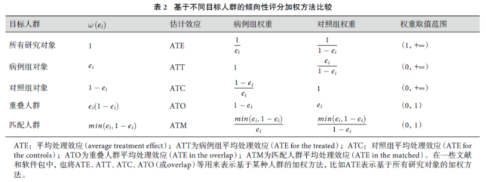
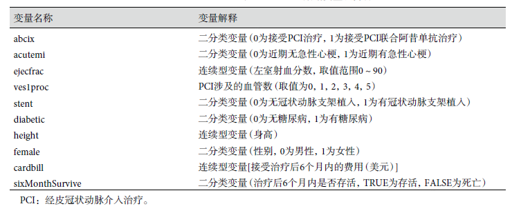
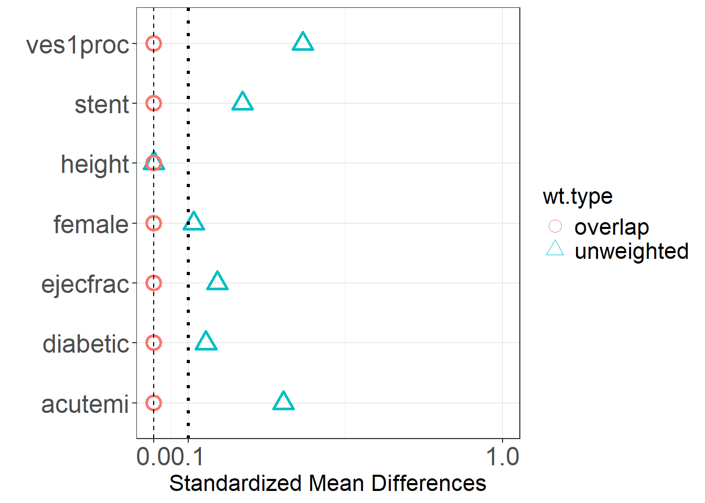

37 R语言倾向性评分：加权
之前已经介绍过倾向性评分匹配（propensity score matching）、倾向性评分回归和分层。
今天继续介绍倾向性评分最后一个重要的部分：倾向性评分加权。
主要介绍两种加权方法：逆概率加权(inverse probability weighting, IPW)和重叠加权(overlap weighting)。
倾向性评分加权的方法有很多，常见的一些加权方法比较如下：

其中ATE就是大家比较常见的IPW方法，还有一种常见的inverse probability of treatment weighting, IPTW，是这里的ATT。前者是针对所有研究对象，后者是针对病例组。
37.1 演示数据
data(lindner, package = "twang")
lindner[,c(3,4,6,7,8,10)] <- lapply(lindner[,c(3,4,6,7,8,10)],factor)
str(lindner)
## 'data.frame': 996 obs. of 11 variables:
## $ lifepres : num 0 11.6 11.6 11.6 11.6 11.6 11.6 11.6 11.6 11.6 ...
## $ cardbill : int 14301 3563 4694 7366 8247 8319 8410 8517 8763 8823 ...
## $ abcix : Factor w/ 2 levels "0","1": 2 2 2 2 2 2 2 2 2 2 ...
## $ stent : Factor w/ 2 levels "0","1": 1 1 1 1 1 1 1 1 1 1 ...
## $ height : int 163 168 188 175 168 178 185 173 152 180 ...
## $ female : Factor w/ 2 levels "0","1": 2 1 1 1 2 1 1 2 2 1 ...
## $ diabetic : Factor w/ 2 levels "0","1": 2 1 1 2 1 1 1 1 1 1 ...
## $ acutemi : Factor w/ 2 levels "0","1": 1 1 1 1 1 1 1 1 1 1 ...
## $ ejecfrac : int 56 56 50 50 55 50 58 30 60 60 ...
## $ ves1proc : Factor w/ 6 levels "0","1","2","3",..: 2 2 2 2 2 2 2 2 2 2 ...
## $ sixMonthSurvive: logi FALSE TRUE TRUE TRUE TRUE TRUE ...
其中abcix是处理因素变量，sixMonthSurvive是二分类的结局变量，cardbill是连续型的结局变量，其余变量是协变量。
首先可以通过tableone包看一下加权前的数据情况：
library(tableone)
covs <- colnames(lindner)[c(1,4:10)]
tab <- CreateTableOne(vars = covs,
strata = "abcix",
data = lindner
)
print(tab,showAllLevels = T,smd = T)
## Stratified by abcix
## level 0 1 p test SMD
## n 298 698
## lifepres (mean (SD)) 11.02 (2.54) 11.42 (1.45) 0.002 0.194
## stent (%) 0 124 (41.6) 206 (29.5) <0.001 0.255
## 1 174 (58.4) 492 (70.5)
## height (mean (SD)) 171.45 (10.59) 171.44 (10.69) 0.996 <0.001
## female (%) 0 183 (61.4) 467 (66.9) 0.111 0.115
## 1 115 (38.6) 231 (33.1)
## diabetic (%) 0 218 (73.2) 555 (79.5) 0.034 0.150
## 1 80 (26.8) 143 (20.5)
## acutemi (%) 0 280 (94.0) 573 (82.1) <0.001 0.372
## 1 18 ( 6.0) 125 (17.9)
## ejecfrac (mean (SD)) 52.29 (10.30) 50.40 (10.42) 0.009 0.182
## ves1proc (%) 0 1 ( 0.3) 3 ( 0.4) <0.001 0.446
## 1 243 (81.5) 437 (62.6)
## 2 47 (15.8) 205 (29.4)
## 3 6 ( 2.0) 39 ( 5.6)
## 4 1 ( 0.3) 13 ( 1.9)
## 5 0 ( 0.0) 1 ( 0.1)如果只是看一下协变量是否在不同组间均衡，可以通过之前介绍过的cobalt实现：
library(cobalt)
## cobalt (Version 4.4.1, Build Date: 2022-11-03)
# 选择只有协变量的数据框
covariates <- subset(lindner, select = c(1,4:10))
bal.tab(covariates,treat = lindner$abcix, s.d.denom = "pooled",
m.threshold = 0.1, un = TRUE,
v.threshold = 2
)
## Balance Measures
## Type Diff.Un M.Threshold.Un V.Ratio.Un V.Threshold.Un
## lifepres Contin. 0.1941 Not Balanced, >0.1 0.3239 Not Balanced, >2
## stent Binary 0.1210 Not Balanced, >0.1 .
## height Contin. -0.0003 Balanced, <0.1 1.0201 Balanced, <2
## female Binary -0.0550 Balanced, <0.1 .
## diabetic Binary -0.0636 Balanced, <0.1 .
## acutemi Binary 0.1187 Not Balanced, >0.1 .
## ejecfrac Contin. -0.1821 Not Balanced, >0.1 1.0238 Balanced, <2
## ves1proc_0 Binary 0.0009 Balanced, <0.1 .
## ves1proc_1 Binary -0.1894 Not Balanced, >0.1 .
## ves1proc_2 Binary 0.1360 Not Balanced, >0.1 .
## ves1proc_3 Binary 0.0357 Balanced, <0.1 .
## ves1proc_4 Binary 0.0153 Balanced, <0.1 .
## ves1proc_5 Binary 0.0014 Balanced, <0.1 .
##
## Balance tally for mean differences
## count
## Balanced, <0.1 7
## Not Balanced, >0.1 6
##
## Variable with the greatest mean difference
## Variable Diff.Un M.Threshold.Un
## lifepres 0.1941 Not Balanced, >0.1
##
## Balance tally for variance ratios
## count
## Balanced, <2 2
## Not Balanced, >2 1
##
## Variable with the greatest variance ratio
## Variable V.Ratio.Un V.Threshold.Un
## lifepres 0.3239 Not Balanced, >2
##
## Sample sizes
## Control Treated
## All 298 698Diff.Adj就是SMD
37.2 IPTW
倾向性评分只是一个概率（倾向干预组的概率），计算概率的算法是在是太多了，选择自己喜欢的就好，我这里就用最简单的逻辑回归，之前的推文中也演示过随机森林等其他估计PS的方法。
psfit <- glm(abcix ~ stent + height + female + diabetic + acutemi +
ejecfrac + ves1proc,
data = lindner, family = binomial())
ps <- psfit$fitted.values逆概率加权以全部研究对象（ATE）为目标人群，通过加权是每一组研究对象的协变量分布于全部研究对象相似。
该种加权方法下，研究对象的权重为该对象所在组的概率的倒数。
- 干预组：1/ps
- 对照组：1/(1-ps)
下面根据计算出的PS计算每一个样本的权重：
iptw <- ifelse(lindner$abcix == 1, 1/ps, 1/(1-ps))
lindner$iptw <- iptw加权后可以再次看看数据是否已经均衡：
bal.tab(covariates,treat = lindner$abcix, s.d.denom = "pooled",
weights = lindner$iptw,
m.threshold = 0.1, un = TRUE,
v.threshold = 2
)
## Balance Measures
## Type Diff.Un V.Ratio.Un Diff.Adj M.Threshold V.Ratio.Adj
## lifepres Contin. 0.1941 0.3239 0.3310 Not Balanced, >0.1 0.2185
## stent Binary 0.1210 . 0.0036 Balanced, <0.1 .
## height Contin. -0.0003 1.0201 -0.0175 Balanced, <0.1 0.8647
## female Binary -0.0550 . 0.0101 Balanced, <0.1 .
## diabetic Binary -0.0636 . -0.0175 Balanced, <0.1 .
## acutemi Binary 0.1187 . -0.0028 Balanced, <0.1 .
## ejecfrac Contin. -0.1821 1.0238 -0.0119 Balanced, <0.1 0.9784
## ves1proc_0 Binary 0.0009 . 0.0009 Balanced, <0.1 .
## ves1proc_1 Binary -0.1894 . 0.0211 Balanced, <0.1 .
## ves1proc_2 Binary 0.1360 . -0.0073 Balanced, <0.1 .
## ves1proc_3 Binary 0.0357 . -0.0155 Balanced, <0.1 .
## ves1proc_4 Binary 0.0153 . -0.0002 Balanced, <0.1 .
## ves1proc_5 Binary 0.0014 . 0.0010 Balanced, <0.1 .
## V.Threshold
## lifepres Not Balanced, >2
## stent
## height Balanced, <2
## female
## diabetic
## acutemi
## ejecfrac Balanced, <2
## ves1proc_0
## ves1proc_1
## ves1proc_2
## ves1proc_3
## ves1proc_4
## ves1proc_5
##
## Balance tally for mean differences
## count
## Balanced, <0.1 12
## Not Balanced, >0.1 1
##
## Variable with the greatest mean difference
## Variable Diff.Adj M.Threshold
## lifepres 0.331 Not Balanced, >0.1
##
## Balance tally for variance ratios
## count
## Balanced, <2 2
## Not Balanced, >2 1
##
## Variable with the greatest variance ratio
## Variable V.Ratio.Adj V.Threshold
## lifepres 0.2185 Not Balanced, >2
##
## Effective sample sizes
## Control Treated
## Unadjusted 298. 698.
## Adjusted 202.27 671.09可以看到除了lifepres之外，其他全都均衡了，效果还是挺不错的。加权后，干预组和对照组的样本量已经变了哦！
如果想要画出加权后数据的基线资料表，可以借助survey包。
library(survey)
## Loading required package: grid
## Loading required package: Matrix
## Loading required package: survival
##
## Attaching package: 'survey'
## The following object is masked from 'package:graphics':
##
## dotchart
# 获取加权后的数据
df <- svydesign(ids = ~1, data = lindner, weights = ~ iptw)
# 使用tableone中的函数创建加权后的三线表
tab_IPTW=svyCreateTableOne(vars=covs, strata="abcix",data=df ,test=T)
print(tab_IPTW,showAllLevels=TRUE,smd=TRUE)
## Stratified by abcix
## level 0 1 p test SMD
## n 1004.38 994.47
## lifepres (mean (SD)) 10.74 (3.05) 11.42 (1.43) 0.024 0.288
## stent (%) 0 333.7 (33.2) 326.8 (32.9) 0.921 0.008
## 1 670.7 (66.8) 667.7 (67.1)
## height (mean (SD)) 171.60 (11.39) 171.41 (10.60) 0.849 0.017
## female (%) 0 668.5 (66.6) 651.8 (65.5) 0.782 0.021
## 1 335.9 (33.4) 342.7 (34.5)
## diabetic (%) 0 762.7 (75.9) 772.6 (77.7) 0.610 0.042
## 1 241.7 (24.1) 221.8 (22.3)
## acutemi (%) 0 857.6 (85.4) 851.8 (85.7) 0.942 0.008
## 1 146.8 (14.6) 142.6 (14.3)
## ejecfrac (mean (SD)) 51.07 (10.23) 50.95 (10.12) 0.879 0.012
## ves1proc (%) 0 3.0 ( 0.3) 3.9 ( 0.4) 0.937 0.088
## 1 664.1 (66.1) 678.6 (68.2)
## 2 261.6 (26.0) 251.7 (25.3)
## 3 61.3 ( 6.1) 45.3 ( 4.6)
## 4 14.4 ( 1.4) 14.0 ( 1.4)
## 5 0.0 ( 0.0) 1.0 ( 0.1)加权之后，就可以做各种分析了，比如回归分析等，分析时把权重因素也考虑进去即可。
这里演示逻辑回归，根据因变量的类型，可选择不同的回归方法。
f <- glm(sixMonthSurvive~abcix+stent+height+female+diabetic+acutemi+
ejecfrac+ves1proc,
data = lindner, family = binomial(),
weights = iptw # 把权重加进去
)
summary(f)
##
## Call:
## glm(formula = sixMonthSurvive ~ abcix + stent + height + female +
## diabetic + acutemi + ejecfrac + ves1proc, family = binomial(),
## data = lindner, weights = iptw)
##
## Deviance Residuals:
## Min 1Q Median 3Q Max
## -4.9894 0.0958 0.1640 0.3071 2.8009
##
## Coefficients:
## Estimate Std. Error z value Pr(>|z|)
## (Intercept) 8.598e+00 1.585e+03 0.005 0.99567
## abcix1 1.785e+00 3.215e-01 5.551 2.84e-08 ***
## stent1 -6.401e-01 3.024e-01 -2.117 0.03426 *
## height 3.491e-02 1.154e-02 3.025 0.00248 **
## female1 8.123e-03 3.143e-01 0.026 0.97938
## diabetic1 -7.314e-01 2.813e-01 -2.599 0.00934 **
## acutemi1 -1.540e+00 3.011e-01 -5.116 3.11e-07 ***
## ejecfrac 5.923e-02 1.057e-02 5.604 2.10e-08 ***
## ves1proc1 -1.378e+01 1.585e+03 -0.009 0.99306
## ves1proc2 -1.184e+01 1.585e+03 -0.007 0.99404
## ves1proc3 -1.569e+01 1.585e+03 -0.010 0.99210
## ves1proc4 -7.180e-02 1.787e+03 0.000 0.99997
## ves1proc5 -1.817e+00 4.262e+03 0.000 0.99966
## ---
## Signif. codes: 0 '***' 0.001 '**' 0.01 '*' 0.05 '.' 0.1 ' ' 1
##
## (Dispersion parameter for binomial family taken to be 1)
##
## Null deviance: 732.98 on 995 degrees of freedom
## Residual deviance: 469.49 on 983 degrees of freedom
## AIC: 485.36
##
## Number of Fisher Scoring iterations: 16但是这种方法存在问题，我在stackoverflow中的帖子中看到有人指出，R自带的
lm和glm中的weights参数并不是样本的权重，这点可以查看帮助文档确定，所以如果想要使用加权后的数据进行线性回归和逻辑回归，需要使用其他的R包，比如survey包。
除了上面介绍的手动计算权重的方法，也可以通过多个R包实现，比如PSW/PSweight/twang等，大家感兴趣的可以自己查看相关说明。
37.3 重叠加权
重叠加权的目标人群是两组协变量相似的人，即PS值分布重叠的人，其估计的效应为重叠人群平均处理效应（ATO）。
- 干预组：1-ps
- 对照组：ps
重叠加权的优缺点可以看这篇文章：最强的倾向性评分方法—重叠加权
使用PSweight包演示重叠加权，这个包不仅可以用于二分类，还可以用于多分类。
还是使用lindner这个数据集。
## 数据准备
rm(list = ls())
data(lindner, package = "twang")
# 构建估计PS的formula
formula.ps <- abcix ~ stent + height + female + diabetic + acutemi + ejecfrac + ves1proc进行重叠加权：
library(PSweight)
PSweight <- PSweight(ps.formula = formula.ps, data = lindner,
weight = "overlap", # 重叠加权
yname = "cardbill", # 因变量
family = "gaussian",
ps.method = "glm",
out.method = "glm"
)
#返回结果，效应估计及其标准误、置信区间、P值
summary(PSweight)
##
## Closed-form inference:
##
## Original group value: 0, 1
##
## Contrast:
## 0 1
## Contrast 1 -1 1
##
## Estimate Std.Error lwr upr Pr(>|z|)
## Contrast 1 1134.91 879.51 -588.90 2858.7 0.1969计算数据均衡性：
SumStat<-SumStat(ps.formula = formula.ps, data = lindner, weight = "overlap")
SumStat[["ess"]] #有效样本量
## unweighted overlap
## 0 298 287.4367
## 1 698 569.5826
plot(SumStat) #均衡性检验图形
summary(SumStat) #均衡性检验
## unweighted result
## Mean 0 Mean 1 SMD
## stent 0.584 0.705 0.254
## height 171.446 171.443 0.000
## female 0.386 0.331 0.115
## diabetic 0.268 0.205 0.150
## acutemi 0.060 0.179 0.371
## ejecfrac 52.289 50.403 0.182
## ves1proc 1.205 1.463 0.427
##
## overlap result
## Mean 0 Mean 1 SMD
## stent 0.633 0.633 0
## height 171.464 171.464 0
## female 0.359 0.359 0
## diabetic 0.242 0.242 0
## acutemi 0.078 0.078 0
## ejecfrac 51.830 51.830 0
## ves1proc 1.257 1.257 0加权后，可以进行后续的各种分析，这里就不演示了。